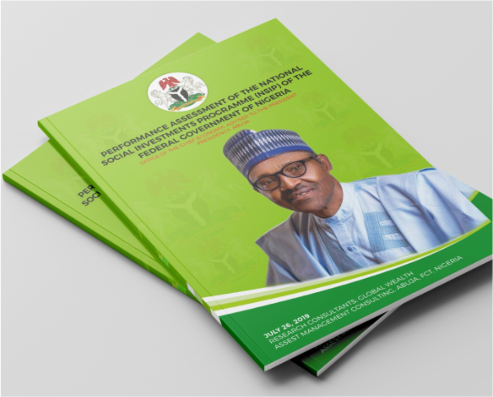
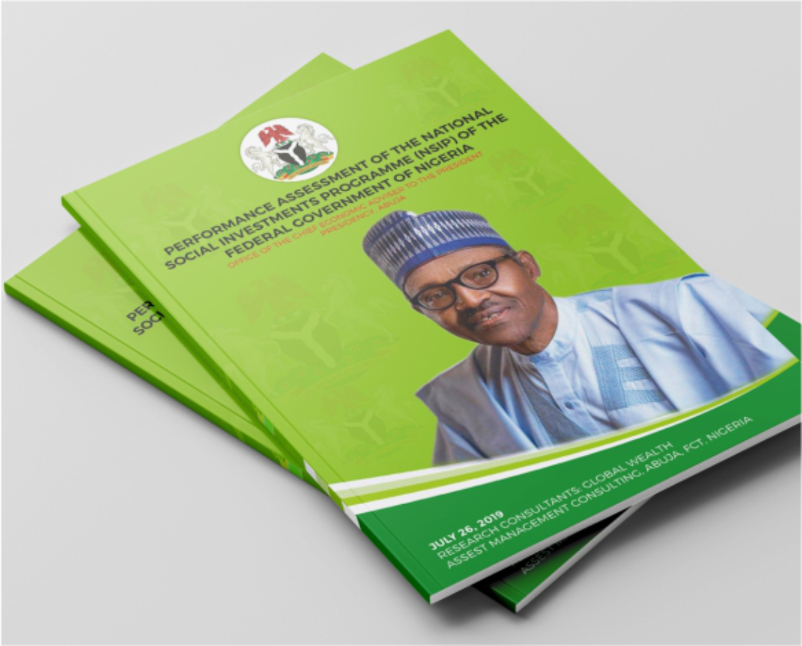

Contact me on the folling links


Suite A30
Danziyal Plaza
Opposte NNPC Mega Station
Central Busines District (CBD)
FCT Abuja Nigeria.
+2348065866588
ezekieldarren@gmail.com
CEO Silk Designs and Print Limited. Experienced in so many designs and printing project.
Well versed in numerous graphic/web design software and printing maching.
GRAPHIC DESIGNER at Peak Press Ltd Suleja Niger State Nigeria as a Graphic Designer 2003 - 2005
GRAPHIC DESIGNER at Emken Printing Press Abuja as a Sinior Graphic Designer. 2007 - 2010 SILK DESIGNS AND PRINT LTD As the Chief Executive Officer (CEO) of Silk Designs and Printi ltd 2015 till date.


 
